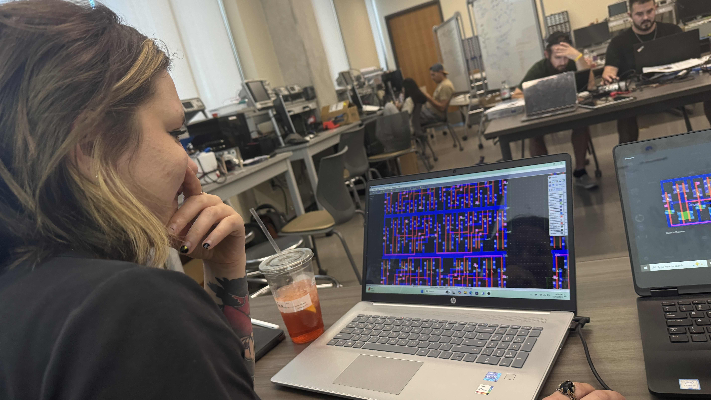

My Role and Contributions
I proposed the layout strategy and implemented the transistor-level physical design in Microwind, including iterative optimization and post-layout simulation. Luke implemented the LTspice schematic-level design and simulation. Shivani managed the timeline, supported integration needs, wrote the paper, and analyzed Microwind simulation outputs.
My Contribution

- Layout architecture proposal (modular 1-bit cell → scalable 8-bit design)
- Microwind transistor-level layout + routing
- Layout optimization (symmetry, compactness, cleaner routing)
- Post-layout simulation + timing validation
What the team delivered
- LTspice schematic + simulation validation (Luke)
- Timeline, documentation, and simulation analysis (Shivani)
- Final report and results packaging (team)